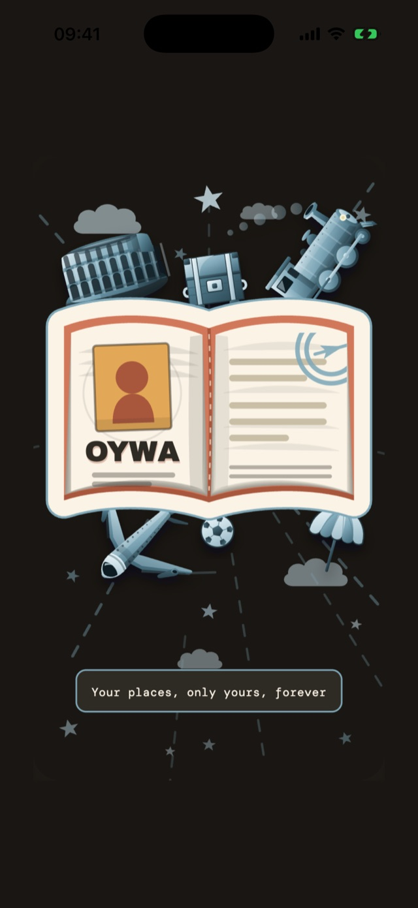

La storia dei tuoi viaggi, sul tuo telefono.
OYWA è il tuo archivio personale dei luoghi visitati: città, hotel, ristoranti, spiagge, monumenti. Non è un social e non è una guida. È la tua memoria di viaggio, in ordine e sempre con te.
- Nessun account
- Niente pubblicità
- iPhone e Android
- 0account da creare
- 0pubblicità e tracciamento
- 9categorie di luoghi
- 100%dati sul tuo telefono
Un posto solo per tutti i posti in cui sei stato.
Salvi un luogo una volta sola. Ogni volta che ci torni aggiungi una visita, con il suo voto.

Tutto il tuo mondo, a colpo d'occhio.
La mappa è la home dell'app. Ogni categoria ha il suo colore e la sua icona, e in alto vedi subito quanti viaggi, città e paesi hai collezionato.
- Filtri per categoria: un tocco per nascondere, una pressione lunga per vedere solo quella.
- Cerca tra i tuoi luoghi, città e paesi.
- Apri un luogo in Mappe, Google Maps o Waze.

Ricordi cosa ti è piaciuto davvero.
Ristoranti, hotel, bar, gelaterie e spiagge si votano con un timbro, come su un passaporto: Pessimo, Medio, Ottimo o Eccellente. Puoi segnare anche la fascia di prezzo.
- Ogni visita ha mese, anno, voto e note.
- Collega la visita a un viaggio, per esempio “Estate in Sicilia”.

Guarda crescere il tuo planisfero.
I paesi che hai visitato si colorano sulla mappa del mondo, con la percentuale per ogni continente. Le categorie sbloccano badge a tre livelli: Timbro, Visto e Lasciapassare.
Fatta come un poster di viaggio.
Colori pastello, forme morbide e timbri: un archivio che hai voglia di aprire.



I tuoi luoghi. Solo tuoi. Per sempre.
OYWA non ha un server che raccoglie i tuoi viaggi. I luoghi, le visite e i voti sono salvati sul tuo dispositivo.
- Tutto sul telefono. Niente account e niente login.
- Nessuna pubblicità e nessun tracciamento.
- Backup quando vuoi, in un file che tieni tu.
Per mostrare la mappa e cercare un luogo l'app usa OpenStreetMap. Cosa viene inviato, e quando, è spiegato nell'informativa sulla privacy.
Vuoi provarla per primo?
Stiamo preparando la versione di test per iPhone e Android. Scrivici: ti avvisiamo appena è pronta. Puoi usare lo stesso indirizzo anche per qualsiasi domanda.